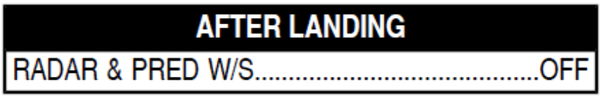

WING ANTI-ICE: Use only when airborne if visible airframe icing.
ENG ANTI-ICE: Must be on whenever icing conditions exist or are anticipated (OAT/TAT <10ºC, visible moisture), except during climb or cruise with SAT below -40ºC.
Delay brake fans for at least 5 min after landing, or before stopping at the gate (whichever occurs first).
If turnaround time is short or brake temperature is likely to exceed 500ºC, use brake fans disregarding the above restriction.
Maintenance action is due if
1. One brake temp exceeds 900ºC.
2. Temperature difference between two brakes on same wheel is more than 150ºC, with one brake equal to or more than 600ºC OR equal to or below 60ºC.
3. Average temperature difference of left and right gear brakes is equal to or above 200ºC.
